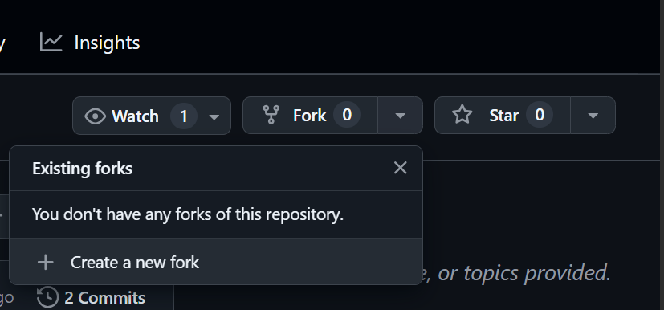
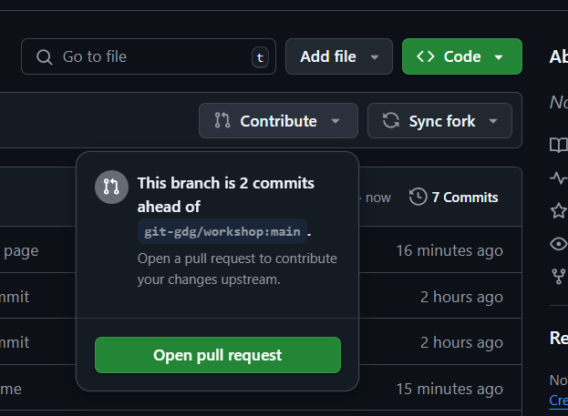

Prerequisites
1Install Git
Make sure you have Git installed on your computer. You can download it from git-scm.com.
Verify your installation by running:
git --version2Install Github CLI
To make our life easier, we will use Github CLI to handle git login and authentication with Github. You can download it from cli.github.com.
Verify your installation by running:
gh --version3Create a GitHub Account
If you don't have a GitHub account yet, create one at github.com/join.
4git authentication
Authenticate with Github using the following command:
gh auth loginStep 1: Fork & clone the Repository
First, fork the repository to your GitHub account:
Click on the "Fork" button in the top right corner of the repository page. Accept and continue.
Then clone the forked repo so that we can work on it. Cloning creates a local copy of the repository on your computer.
git clone https://github.com/<your-username>/workshop.git
cd workshopStep 2: Make Changes
1Create a New Branch
It's a good practice to create a new branch for your changes:
git checkout -b add-your-nameReplace add-your-name with a descriptive branch name.
2Add Your Name to the Contributors List
Open the contributors.md file (or the file specified by your instructor) and add your name to the list:
## Contributors
- [Your Name](https://github.com/yourusername)Save the file after making your changes.
3Check Your Changes
See what files you've modified:
git statusReview the changes you've made:
git diffStep 3: Commit and Push Your Changes
1Stage Your Changes
Add your modified files to the staging area:
git add contributors.mdOr to add all changed files:
git add .2Commit Your Changes
Save your changes with a descriptive commit message:
git commit -m "Add [Your Name] to contributors list"3Push Your Changes
Upload your changes to GitHub:
git push origin add-your-nameReplace add-your-name with the name of your branch.
Note: If this is your first time pushing to GitHub, you might be asked to authenticate.
Note: If you're using gh cli you should be all set. If you're using HTTPS, you might need to enter your GitHub credentials. If you're using SSH, make sure you have set up your SSH keys.
Step 4: Create a Pull Request
1Go to your forked repository on GitHub
Open your web browser and navigate to your repository repository on GitHub.
Click on the "Contribute" button and then "Open pull request".
2Create a New Pull Request
You should see a prompt to create a pull request for your recently pushed branch. If not:
- Click on the "Pull requests" tab
- Click the "New pull request" button
- Select your branch from the "compare" dropdown
- Click "Create pull request"
3Fill in the Pull Request Details
Add a title and description for your pull request:
Click "Create pull request" to submit.
Congratulations! You've successfully created a pull request. Now wait for the repository maintainer to review and merge your changes.